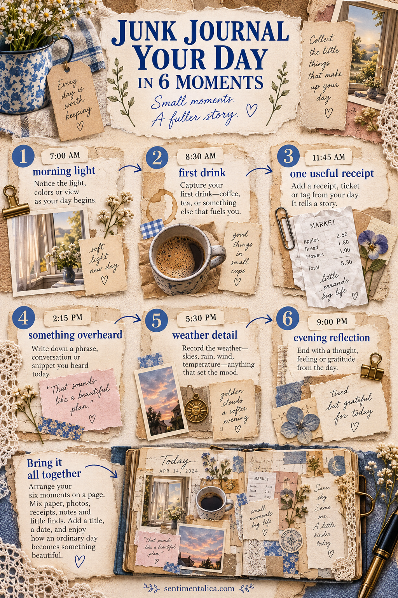

You do not need a holiday or milestone to make a page worth keeping. An ordinary day becomes memorable when you collect a few exact details instead of trying to summarize everything.

Morning light
Notice the first light you remember: grey window light, a bright stripe on the floor or a lamp switched on before dawn. Add one paper color that matches it.
Your first drink
Save a tea tag, coffee sleeve or simply draw the cup. Write where you sat and whether the drink was hurried, forgotten or enjoyed slowly.
One useful receipt
Choose a receipt, ticket or label that locates the day. Circle one item or write why the errand mattered. Remove payment details and anything private.
Something overheard
Record one phrase from a conversation, radio programme or street. It can be funny, puzzling or completely ordinary. Quotation marks give it a clear little place.
The weather detail
Avoid writing only “rainy” or “sunny.” Note the silver puddles, warm wind, heavy air, early darkness or clouds that looked like torn paper.
Evening reflection
Finish with one sentence: what surprised you, what felt difficult, what you want to remember or what can be left behind.
Assemble the page later
Keep the day’s scraps in one envelope if you cannot journal immediately. When you return, place the six moments loosely in time order. They do not need six separate boxes; overlapping them creates a more natural memory trail.
Use one repeated color or line to connect the clusters. A blue pencil mark, date stamp or strip of the same paper can travel through the page like a thread.
The purpose is not to prove that the day was beautiful. It is to notice that it was specific. Six small moments are enough to give an ordinary day shape.
Use a simple collection system
Carry a small envelope or fold one sheet of paper into a temporary pocket. Put safe flat items inside and write quick notes on the outside. If you prefer your phone, keep a note with the six headings and add a phrase under each.
At home, choose rather than transfer everything. One receipt may represent the whole errand; one photograph may hold the weather and light together. Editing keeps the journal readable and leaves room for your own words.
When the day felt uneventful
Record a change instead of an event: the room becoming darker, a cup cooling, the sound of traffic fading or your energy returning after lunch. Ordinary time is full of movement when you look closely.
You can also compare expectation with reality. Write what you thought the day would be, then what it became. Add one scrap from each version—a neat planned list beside a wrinkled receipt, for example. That contrast creates a story without requiring anything dramatic.
Finish by naming what you want tomorrow to remember about today. This last sentence gives the page an emotional center and helps you decide which extra scraps are unnecessary.